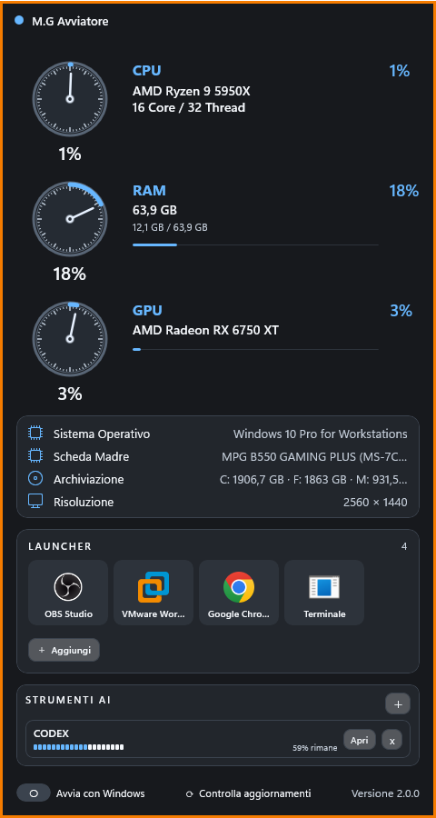

{kind=link}
Monitor del PC
CPU, RAM, GPU, rete, download, upload e ping in una vista facile da leggere.
Windows · Progetto
Widget e launcher compatto per Windows: programmi, collegamenti e informazioni essenziali del PC sempre a vista, senza cercare tra finestre e menu.

Screenshot ufficiale: il widget completo di M.G Avviatore. Apri immagine
Che cos'è
M.G Avviatore è un widget e launcher compatto per Windows. È pensato per chi vuole tenere a portata di mano le informazioni che consulta più spesso e i programmi che apre ogni giorno, senza trasformare il desktop in un insieme di finestre sparse. In poco spazio riunisce stato del computer, attività di rete, informazioni sul sistema e una griglia di collegamenti che si adatta allo spazio disponibile. Può restare davanti alle altre finestre quando serve, ma senza imporre un modo complicato di lavorare. Temi, bordo, posizione e dimensione permettono di renderlo più discreto o più evidente. È utile sia su un PC di casa sia su una postazione di lavoro, quando si desidera una vista rapida e ordinata delle cose importanti.
Caratteristiche principali
CPU, RAM, GPU, rete, download, upload e ping in una vista facile da leggere.
Programmi e collegamenti organizzati in una griglia che si riordina secondo lo spazio disponibile.
Temi, bordo, posizione e dimensione per trovare un equilibrio con il proprio desktop.
Cosa puoi fare
Vedere download, upload e ping insieme alle informazioni principali del computer.
Richiamare rapidamente programmi e collegamenti personali dalla griglia del launcher.
Usare l'opzione sempre in primo piano quando serve controllare i dati mentre si lavora.
Ridimensionare il widget e lasciare che il launcher si riordini anche nelle finestre più strette.
Gestire audio, evita sospensione e spegnimento automatico programmabile dal widget.
Controllare dal programma la disponibilità di aggiornamenti tramite GitHub Releases.
Installazione e download
Il programma è destinato a Windows 10 e Windows 11 a 64 bit. Nella pagina Release trovi l'installer ufficiale; la pagina GitHub raccoglie invece il codice, le note e le informazioni del progetto.
Scopri anche
Ti è stato utile questo progetto?Un piccolo aiuto contribuisce a tenere disponibili software e contenuti gratuiti.
♡ Sostieni il progetto